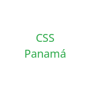

Nuestros Clientes
Trabajamos con clientes institucionales que exigen altos estándares de calidad, trazabilidad y cumplimiento regulatorio. A continuación se presentan los principales y secundarios (nombres representativos para el prototipo).
Nota crítica: Tener a una aerolínea como cliente principal es un logro comercial importante, pero genera dependencia. Si el contrato se pierde o se reduce el volumen, el impacto financiero es alto. Se recomienda diversificar hacia más hospitales y cadenas de clínicas para reducir riesgo.
Cliente Principal
Copa Airlines
Aerolínea bandera de Panamá. Suministro de kits médicos, medicamentos OTC y logística refrigerada para operaciones aéreas.
Clientes Secundarios
Hospital Chiriquí
Suministro regular de insumos médicos y medicamentos para área de urgencias y hospitalización.

Caja de Seguro Social (Chiriquí)
Apoyo en distribución de insumos sanitarios y medicamentos de uso institucional.
Farmacias Lee (sucursales David)
Distribución mayorista de productos OTC y dispositivos médicos de alta rotación.
Clínicas privadas del occidente
Varias clínicas en David y Boquete reciben suministros programados y de emergencia.